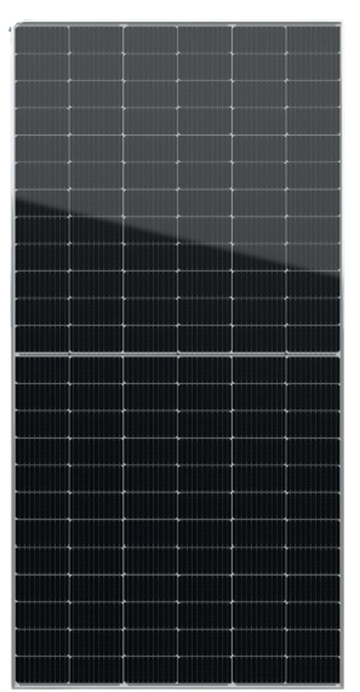
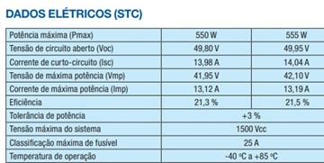

Placas Solares
Placas solares são dispositivos formados por células fotovoltaicas que convertem energia solar em energia elétrica através do efeito fotovoltaico. Esses dispositivos são compostos por materiais semicondutores, como o silício. Como já explicado anteriormente, as placas coletam fótons de luz solar e através da colisão com os átomos de silício, é convertida em energia elétrica que pode ser usada para diversas situações.
IntelBras
A Intelbras é uma empresa que oferece produtos nos âmbitos de segurança, comunicação, redes e energia. É uma empresa consolidada no mercado, já atuando a 45 anos e investindo em sustentabilidade, com a coleta seletiva e eliminação de resíduos gerados pelas suas operações de produção, também com a implementação de Estações de Tratamento de Efluentes (ETEs).
No setor energético, a Intelbras é uma das principais fabricantes em energia fotovoltaica do país, apresentando diversos produtos que auxiliam o dia a dia das pessoas, reduzindo custos e deixando o mundo um ambiente mais sustentável. A intelbras possui dentro do seu portfólio as placas solares, podemos citar alguns modelos como:
EMSD-605B NTYPE
Essa placa oferece um ótimo custo benefício ao consumidor pois gera energia solar em projetos de diversos tamanhos. Essa placa possui tecnologia N-Type, as células N-Type possuem uma composição de silício monocristalino dopadas com fósforo, isso permite uma maior tolerância à impureza e menos defeitos. Essa placa também possui células bifaciais que permitem uma melhor eficiência pois captam irradiação solar tanto na parte frontal quanto na parte traseira.
Essa Placa possui uma performance de STC em: Potência Máxima: 605W Tensão Máxima de operação:40,25A corrente Máxima de operação: 15,03A Tensão de Circuito aberto: 48,79A Corrente de Curto Circuito:15,93 Eficiência do Módulo: 22,40%/
Endereço da IntelBras
Endereço: BR-101, KM 210 - Distrito Industrial, São José - SC, 88104-801
WEG
A WEG é uma das maiores empresas do mundo no ramo de eletroeletronicos, sua sede fica em Jaraguá do Sul(SC). A WEG fabrica diversos equipamentos como motores, geradores, sistemas, geração de energia, distribuidores e muito mais. No quesito energia solar,a weg se consolidou como referencia no desenvolvimento de soluções em energia solar, fabricando placas solares para comércio, agronegócio, usinas solares e residências.
Modelo De Placa Placa WPV HMM1


Por: WEG
Endereço da WEG
Endereço: Av. Pref. Waldemar Grubba, 3300 - Vila Lalau, Jaraguá do Sul - SC, 89256-900
Comparando as Placas
As duas empresas são consolidadas e experientes em seu ramo, apresentando diversos tipos de tecnologia em seus produtos. Com isso, ao compararmos as duas notamos algumas diferenças. A Intelbras utiliza a tecnologia N-Type nos seus produtos, o que garante uma maior tolerância à impureza e defeitos, além de possuir uma maior potência e eficiência sendo a WEG 21,3% e a Intelbras com 22,3%. No entanto,a WEG oferece diversas aplicações aos seus produtos como citado anteriormente e também possui 2 tipos de garantia: a garantia de fabricação a garantia de performance. O custo-benefício depende do tipo de situação em que a placa será utilizada, mas em residências as placas da Intelbras tem um melhor custo-benefício e uma performance melhor.